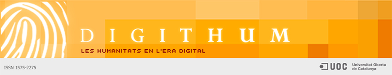

16 números de Digithum. A les portes d’un nou repte
Francesc Núñez i Narcís Figueras. Professors dels Estudis d’Arts i Humanitats de la UOC. Equip directiu de Digithum. Maig, 2015
La revista Digithum publica el seu setzè número, que aquest cop es dedica al tema Els nous parlants de llengües minoritàries: pertinences i legitimitats, sota la coordinació de la Dra. Maite Puigdevall (UOC). El monogràfic consta d’una introducció a càrrec de la coordinadora i de quatre articles. El primer, signat per Fernando Ramallo i Bernadette O’Rourke, porta el títol de Perfils de neoparlants de gallec. John Walsh i la mateixa Bernadette O’Rourke n’aporten el segon, que es titula La conversió en nous parlants d’irlandès: les mudes lingüístiques al llarg del cicle vital. El tercer article, original de Tulay Martínez, se centra en La construcció de desigualtats en espais bilingües: l’ensenyament del català a dones immigrants, mentre que el quart i últim article el signen les investigadores Ane Ortega, Estibaliz Amorrortu, Jone Goirigolzarri, Jacqueline Urla i Belen Uranga, i tracta sobre Identitat lingüística dels nous parlants de basc: quin tipus d’euskaldun sóc?.
Durant el darrer any, i paral·lelament a la preparació del monogràfic, Digithum ha dut a terme un intens procés de revisió i millora amb l’objectiu de continuar en la via, iniciada ja fa uns anys, de convertir-se en una revista científica de qualitat. Aquest procés s’ha centrat, principalment, a analitzar amb detall tots els indicadors relacionats amb els processos de publicació i normes editorials que caracteritzen una revista científica internacional. Des de l’equip de direcció de la revista volem fer constar el nostre agraïment a l’equip de Comunicació Digital de la UOC per haver-nos acompanyat amb rigor i professionalitat en un procés que ha estat llarg i intens. També volem mostrar la nostra satisfacció per haver pogut complir pràcticament amb el 100% de la cinquantena llarga de criteris exigits.
Juntament amb aquest procés de millora de la qualitat de la revista, l’equip directiu de Digithum i la direcció dels Estudis d’Arts i Humanitats han dut a terme una reflexió que, a partir de la valoració de la trajectòria de la revista i de l’anàlisi del context actual, ha abocat a una reorientació de la seva línia editorial. Sense perdre la identitat que des dels inicis l’ha caracteritzat, de ser una revista d’Arts i Humanitats en un món on les tecnologies digitals són presents en tots els processos de producció i de gestió del coneixement, ens proposem d’aprofundir encara més en l’esperit pioner de la nostra universitat i en la voluntat dels Estudis d’Arts i Humanitats d’exercir un paper de primer ordre en l’anàlisi i la reflexió pel que fa als canviants àmbits de coneixement i recerca de les Humanitats i les Ciències Socials. I a aquesta tasca com prometem des d’ara les energies i les possibilitats de Digithum en tant que revista científica.
La primera actuació de la nova etapa, que encapçalarà la Dra. Natàlia Cantó i que té com a objectiu fer créixer el reconeixement de la revista en l’àmbit acadèmic, consistirà a perfilar-ne d’una manera més nítida la focalització temàtica. Amb l’adopció del subtítol Experimenting with Arts and Humanities, Digithum vol projectar una mirada sobre les arts i les humanitats com a mètode de treball al si de projectes interdisciplinaris. La revista es proposa esdevenir, en els propers anys, un referent en aquest camp, que representa un aprofundiment i una reelaboració teòrica i crítica de la seva perspectiva fundacional.
Les arts i les humanitats experimenten avui replantejaments en direccions diverses i cerquen un lloc tant dins com fora de la universitat. Conceptes i pràctiques com la interdisciplinarietat, la ciència oberta i la ciència ciutadana (en el sentit d’obertura a la participació i cocreació) esdevenen claus per pensar la ciència i la producció de coneixement del futur. Digithum vol esdevenir, doncs, en aquest context, una plataforma acadèmica d’intercanvi d’experiències i projectes, del coneixement nou que aflora ja ara i que ho farà encara més en el futur immediat) precisament en aquest punt de confluència que posa les arts i les humanitats en diàleg i en interrelació amb les altres disciplines de la producció de coneixement. Ens interessen especialment recerques empíriques i teòriques que, des dels àmbits de les ciències socials i de l’educació, de les ciències naturals i les tecnologies, incorporin les arts i les humanitats en el seu procés de creació i difusió de coneixement.
Volem aprofitar, doncs, els 15 anys d’experiència i l’esforç que hem dut a terme amb vista a la millora de la qualitat de la revista per tal de proposar-la novament com a espai obert a la reflexió i al debat sobre un àmbit que és emergent hores d’ara i en què Digithum, els Estudis d’Arts i Humanitats i la UOC en el seu conjunt tenim l’obligació de ser referents.
Francesc Núñez i Narcís Figueras